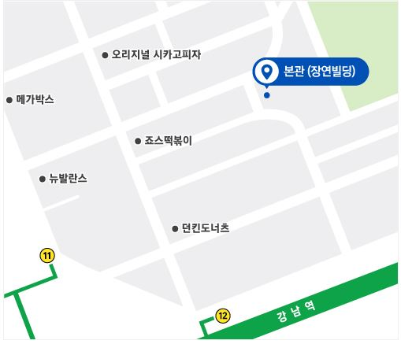

백엔드 개발자 강 정 현 입니다.
소개합니다

- 사는 곳 : 서울시 강남구 논현동
- 하는 일 : HTML, 파이썬, 자바 및 백엔드 개발
이메일 - kangjh1994@gmail.com
Current Time :
Career

- (현) 그린컴퓨터 백엔드 자바과정 수료중
- (전) 강일고등학교 졸업
- (전) 고덕중학교 졸업
- (전) 강덕초등학교 졸업
찾아오는길

서울 강남구 테헤란로5길 24
2호선 / 강남역 11번, 12번 출구, 약 200m